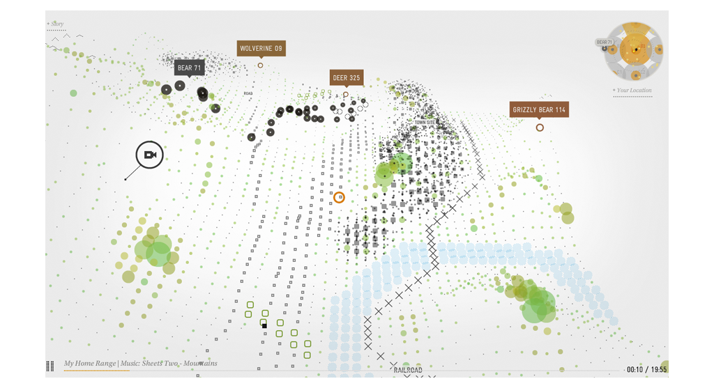
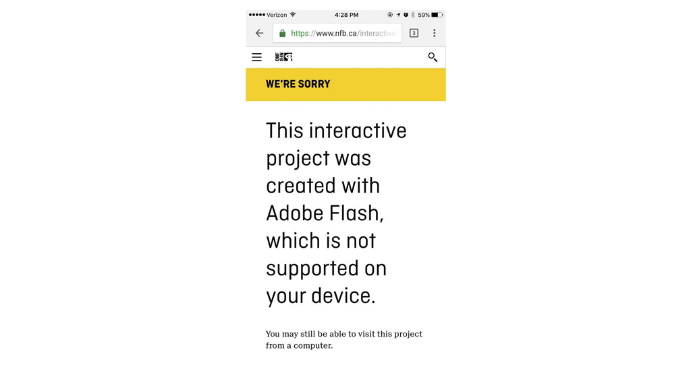
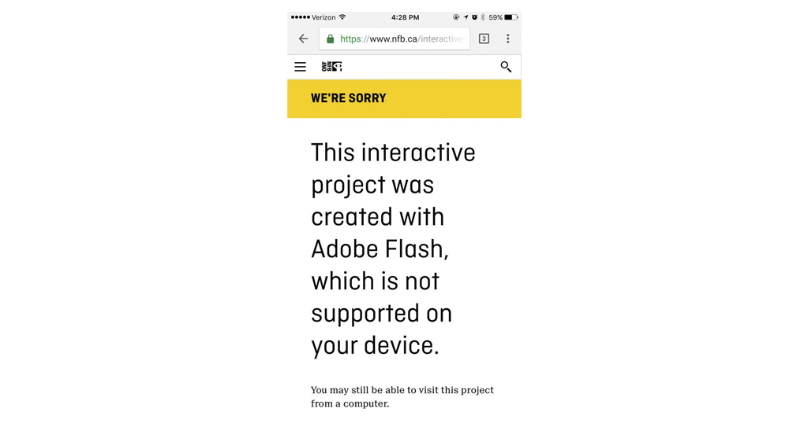

#23 Bear 71
#23 Bear 71
Bear 71 is a web documentary that takes the user through the life of a grizzly bear, from the day is brought to the wild, until the end of the story.
The experience can be divided in two different parts, one where we (the user) experience a linear story narrated by the voice of the bear itself, and a second part that lets the user roam through a map where different details of the life in the canadian forest. This two parts are not separated by any means, you roam around the map while listening to the story. This is a good solution. It gives the user something to do while listening to the narrator, and helps to get into the story. This structure, if linked to the ones shown in class can be similar to the fishbone narrative, but with a couple changes, due to never truly leaving the storyline
The experience can be divided in two different parts, one where we (the user) experience a linear story narrated by the voice of the bear itself, and a second part that lets the user roam through a map where different details of the life in the canadian forest. This two parts are not separated by any means, you roam around the map while listening to the story. This is a good solution. It gives the user something to do while listening to the narrator, and helps to get into the story. This structure, if linked to the ones shown in class can be similar to the fishbone narrative, but with a couple changes, due to never truly leaving the storyline
The angle the user has of the map is through a bird view, the looks of the map are similar to a videogame, where you have a mini-map that helps you now your position and travel without getting lost. The space that is the map offers extra information that the story that is being narrated does not expose. That way, is you as the user feel like you need to know more and want to explore the map, you can. The whole experience is very interesting, the story is told by a bear, but the similarities with our world and concerns about privacy and freedom, that connection is made by breaking the barrier between the person in the website and the bear due to human voice given to the bear, that way, even though you know it’s a bear you humanise it and it’s easier to put yourself in it’s place and understand the issues that are being shown. I don’t want to dive into much into the story as I want others to enjoy the site.
This piece is only accessible through an internet browser, like chrome or safari. Although being a fairly recent piece, it used flash, which for the past years has been completely abandoned due to the appearance of new and superior methods. It can still be viewed on conventional browsers but on other platforms like cellphones or other it is not possible. Smartphones haven’t supported java players for some years now.



Although being an experience created in 2012, it is very demanding towards the computer, it’s difficult to run it smoothly on a machine of the same year. That shows that it may be not a good example of what in my opinion a webdoc should be. A documentary is a tool to tell stories that you want most people to hear, or at least the biggest number on the specific audience that the author is targeting it to. This doc has a specific audience; anyone that uses internet and or has an interest on wildlife. This is a broad audience, and to have a message that so limited by how it can be viewed, and specially when distributed for free, and through the internet, it’s a pity this wasn’t contemplated, and that the user experience suffers so much in the final result.
gP